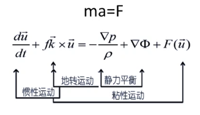
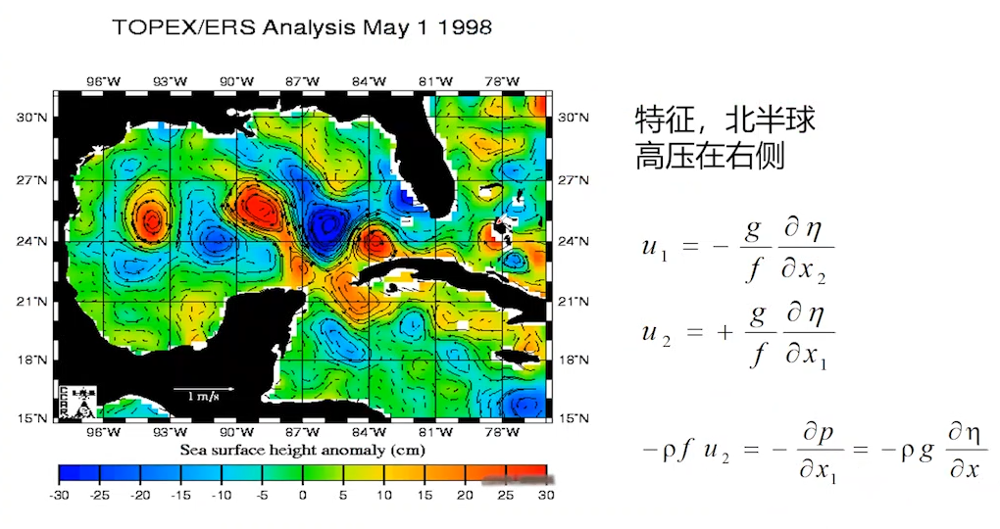
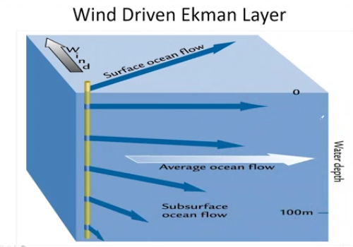
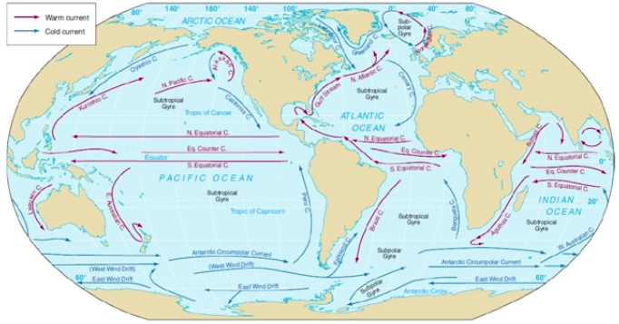
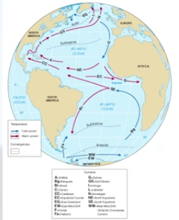
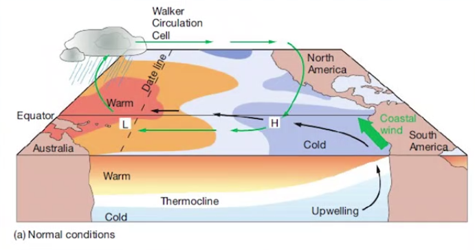
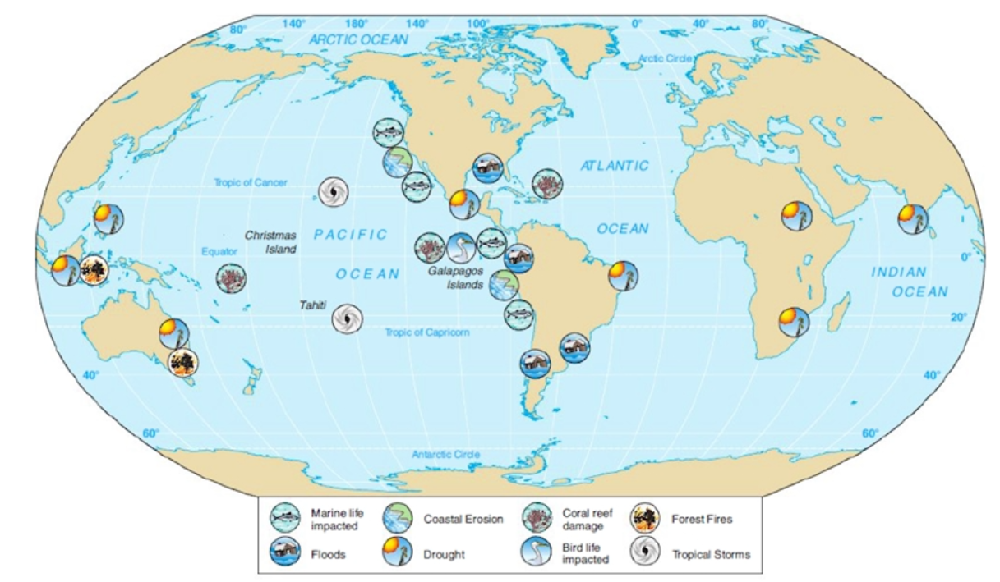

Note#04 Fundamentals of Physical Oceanography
# 第六章：海洋环流
物理海洋基本控制方程：
常见量纲特征尺度：

通过写出所有项的量纲，变换出无量纲数，略去后简化方程。

# 地转流
不考虑摩擦，尺度比较大，剩余左边的科氏力和右边的压强梯度力，得到解析解：

海表高度异常的特征


解析解表明速度和压强梯度力成正比。
# 位涡 PV 位势涡度
对于点 O 的涡旋，或涡度的定义如下

方向：右手法则，拇指为正则 cyclone。

前面的涡度认为是相对涡度，加上科氏力 / 地转引起的涡度（行星涡度）为绝对涡度，除以水深则为位势涡度。

不受外力的情况下 PV 守恒。
冷涡（涡度为正）传到近岸消失。
# Ekman 理论
地转和摩擦力平衡，风生 Ekman 流。在北半球，洋流运输方向为风向偏右。

可计算出风能够影响洋流的深度大概在几十米左右。

# Sverdrup 输运
风如何间接影响海里的输运？
由于 Ekman pumping 导致深处海洋的水深下降，相对涡度为 0，根据位势涡度守恒，行星涡度也要减小，于是洋流向低纬度地区流动。
# 大洋环流
# 热盐环流概述
热盐环流：在海洋中，以太阳辐射能作为驱动力的环流。海洋内部的温度和盐度随着空间变化时，海洋的密度也会相应的发生变化，由这种密度变化产生的海水运动。
上表层水密度增加造成的热盐环流。
- 其密度增加，可以直接由冷引起，也可以间接因水结冰时盐析导致的未结冰水密度增加。
- 特殊的同密度不同温盐性质的 cableing 混合造成。
- 冰晶之间有盐，盐冰不是纯的冰，含盐量会小于原来海水的含盐量。剩下的海水，含盐量比结冰前就会高。密度就会大，进而下沉。
由于可下沉到中层深度甚至是底层的垂直流动可以引起海水的水平流动，形成热盐环流。
一般认内，垂直流发生在整个海洋盆中，是一个渐进的、均匀的上升流，在表面温度较高的低纬度地区，上升流可能略大一些。穿过崎岖的海底地形的深水是产生上升流的一个主要因素，上升流使深水回流到海面。
海水密度的增加可能是由温度下降或盐度增加引起的；温度对密度的影响更大；盐度引起的密度变化只有在高纬度地区才重要。大多数深海洋流 (热盐环流) 的水都来自于表面的高纬度地区。

一圈环流上千年哦！
# 风生环流概述
风生环流：由密度变化和风应力引起的环流。
如果没有大陆，海洋的表面环流格局将与世界主要的风带密切匹配。风生环流主要为水平环流 (不同于热盐环流)
世界海洋的主要风力推动的表面洋流形成五个主要的亚热带气旋:
- 北太平洋 (龟) 环流，
- 南太平洋（海尔达尔）环流，
- 北大西洋 (哥伦布) Gyre,
- 南大西洋 (Navigator) Gyre,
- 印度洋 (Majid) Gyre。
-
赤道洋流：南半球和北半球的东北信风，使热带之间的水团运动起来，沿赤道向西运动。
-
西边界流：当赤道洋流到达海洋盆地的西部时，科利奥利效应使这些洋流偏离赤道，成为由副热带环流的部边界组成的西部边界洋流。均沿各自海洋盆地的西部边界流动。我国的 “黑潮”，高温高盐看起来黑。
-
边缘流：南纬 30 度至 60 度之间，南半球的盛行的西风引导海洋表层水向东穿过海洋盆地。大西洋洋流和南极绕极洋流 (西风漂流) 进来。在北半球，这些洋流由副热带环流的北部组成，称为北缘洋流；在南半球，它们由副热带环流的南部组成，称为南缘洋流。
-
东边界流：当洋流流经海洋盆地时，科氏力和大陆屏障使它们向赤道移动，形成沿海洋盆地东部边界的副热带环流的东部边界层。
-
赤道逆流：由于南北赤道洋流的作用，大量的水被向西推进。水沿着海洋盆地的西部边缘堆积，导致盆地西部的平均海亚面高达 2 米 (6.6 英 R) 比东部高。在重力的影响下，西缘的水向下流动，形成狭窄的赤道逆流，这些逆流向东流动，与相邻的赤道逆流相反，并在赤道逆流之间流动。在太平洋中特别明显，因为志道附近的水形成一个圆顶，被困在澳大利亚和亚洲之间布满岛屿的海湾里。赤道洋流的不断涌入形成了圆顶，并形成了向东的逆流，横跨太平洋向南美洲延伸。
-
副极地环流：盛行西风带而向东流动的北或南边界洋流最终进入亚极地纬度 (约北纬 60 度或南纬 60 度)。它们受极地东风的驱动，向西风方向移动，产生与邻近的副热带环流相反的亚极地环流。亚极环流比副热带环流小且少。
# 环流与水团
上层和下层的边界？
温度剖面垂向梯度变化不大的深度。大概是 300~1000 米。在海表层也有一段温度梯度几乎为零的混合层。风浪不停的搅拌，均匀的混合层。一般不超过 200 米。这两层的差的部分，有很强的层化现象，温跃层，都相对稳定。
温跃层下边就是深层水，稳定性不强。
和底边界接触的地方，如果于深层水性质发生明显变化，又被称为底层水。
大洋环流特征：
- 反气旋是中低纬度海域共有主要特征。
- 在西边界流的地方，流较窄流速大且更深，“西向强化”。
- 赤道区有三个大洋有相似的流系。往西流的南北赤道流。它们中间向东赤道逆流。赤道往深 100 米处有赤道潜流，向东流。均受到埃克曼旋流和埃克曼输移、地转流和副热带环流向西加强等影响。
# 各大洋描述性特征
洋流的模式因海洋盆地的几何形状、主要风带的模式、季节因素和其他周期性变化而不同。
南大洋：南极绕极洋流是唯一一股完全环绕地球的洋流。南极底层水是绕极水和陆架水的混合产物。
大西洋海洋环流：

印度洋流：唯一一个逆风的大洋

太平洋环流：

厄尔尼诺南方涛动与拉尼娜：



ENSO 的影响：
